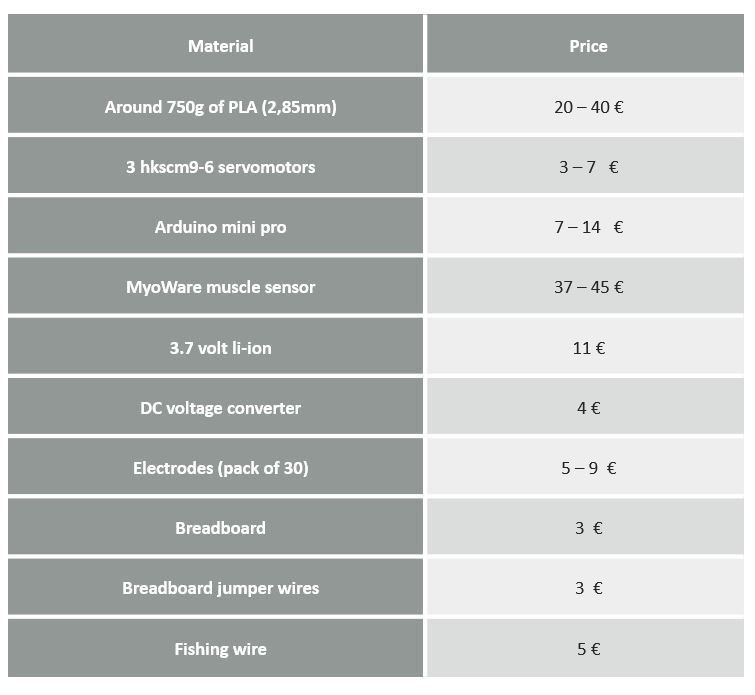

Sadly, the final prototype was not satisfactory since currently the prototype is not functional due to different issues. First problems appeared when designing, since we hadn’t developed enough skills for making a human-like prosthetic; problems with the 3D-printing also appeared since small but important details were lost and additionally, the reading of the muscle signals was never precise enough for making the prosthetic work in a real patient.
In the following links, some videos of our myoelectric hand can be seen.
The most remarkable fact of our prototype is that it can be develope with a low cost, which is not usual with this kind of myoelectric hands.
Bellow, a table of the cost is shown. As it can be seen, the total cost of developing this myoelectric hand is 121 euros.

FUTURE PLANNING
We were really looking forward to finishing the project and be able to make the controllable hand.
We both agree that ending the project will be the first thing we would like to do.
Additionally, we would like to be able to make the forearm more human like.
This would be done by scanning the patient (and its other arm), and by using the sculpt tool in fusion 360 for making it more human like.
Finally, being able to incorporate feel sensor with a determined feedback will make the prosthetic more real.